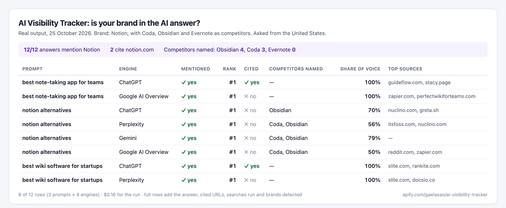

Does ChatGPT recommend your brand?
More buyers now ask an AI assistant before they search. The AI Visibility Tracker asks ChatGPT, Perplexity, Gemini, Google AI Overviews and Google AI Mode the questions your customers ask, and tells you, answer by answer, whether your brand is named, at which rank, whether your website is cited, and which competitors are recommended instead.
In our study of 10 categories, a challenger beat the best-known brand in 5 of them.
What you get for each question
- Named or not, how many times, and the rank of the first mention
- Your pages cited as sources, and their position
- Competitors named and cited, and your share of voice
- All the sources the answer used, with their domains
- A summary per engine and an overall mention rate

Example: HubSpot on five CRM questions
HubSpot was named in 100% of answers, but its website was cited as a source in only 45%:
| Engine | Named | Website cited | Average rank |
|---|---|---|---|
| Google AI Overviews | 100% | 60% | 1.2 |
| ChatGPT | 100% | 80% | 1.0 |
| Perplexity | 100% | 40% | 1.0 |
| Gemini | 100% | 0% | 1.2 |
Price
$0.02 per answer checked, plus $0.01 per run. Ten questions on the four default engines cost $1.01. There is no subscription and no API key to manage: the tool runs on Apify, and you pay only for the answers you check. Free Apify accounts can check 2 questions per run.
Check your brand now
Enter your brand, your domain, up to 10 competitors and up to 25 questions. Results in about a minute, as a table or through the API.
Ready-made checks
- ChatGPT brand mentions
- AI share of voice
- Google AI Overviews
- Google AI Mode
- Perplexity citations
- Gemini visibility
- Sources AI cites in your niche
- SaaS audit
Questions
Which AI engines are checked?
ChatGPT (with web search), Perplexity, Gemini, Google AI Overviews and Google AI Mode. You choose which ones to run.
Why do results change from one day to the next?
AI answers are not fixed. Run the same questions every week and follow the trend rather than a single answer.
Does it work outside the US?
Yes. Choose the country and language; the questions are asked as a local user would ask them.
What is a citation?
A link to your website among the sources the AI used for its answer. Being named without a citation is more common.